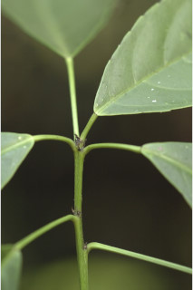
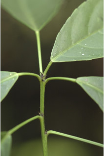

Trees up to 15 m tall.
15 ಮೀ. ಎತ್ತರದವರೆಗೆ ಬೆಳೆಯುವ ಮರಗಳು.
15 മീറ്റര് വരെ ഉയരമുളള മരങ്ങള്.
மரங்கள் 15 மீ. உயரம் வரை வளரக்கூடியது.
Bark grey, smooth, minutely lenticellate; blaze dull orange.
ತೊಗಟೆ ಬೂದು ಬಣ್ಣದಲ್ಲಿದ್ದು ನಯವಾಗಿರುತ್ತದೆ ಹಾಗೂ ಸೂಕ್ಷ್ಮವಾದ ವಾಯುವಿನಿಮಯ ಬೆಂಡುರಂಧ್ರಗಳ ಸಮೇತವಾಗಿರುತ್ತದೆ; ಕಚ್ಚು ಮಾಡಿದ ಜಾಗ ಮಂದವಾದ ಕಿತ್ತಳೆ ಬಣ್ಣದಲ್ಲಿರುತ್ತದೆ.
സൂക്ഷ്മ ശ്വസനരന്ധ്രങ്ങളുള്ള, ചാര നിറത്തിലുള്ള പുറംതൊലി; വെട്ടുപാടിന് മങ്ങിയ ഓറഞ്ച് നിറമാണ്.
மரத்தின் பட்டை சாம்பல் நிறமானது, வழுவழுப்பானது, மிக மரத்தின் பட்டை நுண்ணிய லெண்டிசெல் கொண்டது; உள்பட்டை மங்கிய ஆரஞ்சு நிறமானது.
Branchlets terete, glabrous.
ಕಿರುಕೊಂಬೆಗಳು ದುಂಡಾಗಿದ್ದು ರೋಮರಹಿತವಾಗಿರುತ್ತವೆ.
അരോമിലമായ, ഉരുണ്ട ഉപശാഖകള്.
சிறிய நுனிக்கிளைகள் குறுக்குவெட்டுத் தோற்றத்தில் வளையமானது, உரோமங்களற்றது.
Leaves simple, alternate, spiral; stipules caducous; petiole 2-3 cm long, shallowly canaliculate, swollen at both ends, glabrous; lamina 8-20 x 3-8 cm, narrow elliptic to obovate, apex abruptly acuminate, base acute to cuneate; margin remotely serrate, subcoriaceous, shining above, glabrous, pair of glands present at the junction of lamina and petiole above; secondary_nerves 5-6 pairs with hairy domatia in the axils; tertiary_nerves reticulo-percurrent.
ಎಲೆಗಳು ಸರಳವಾಗಿದ್ದು,ಪರ್ಯಾಯ ಮತ್ತು ಸುತ್ತು ಜೋಡನಾ ವ್ಯವಸ್ಥೆಯಲ್ಲಿರುತ್ತವೆ; ಕಾವಿನೆಲೆಗಳು ಉದುರಿ ಹೋಗುವಂತಹವು;ತೊಟ್ಟುಗಳು 2 - 3 ಸೆಂ.ಮೀ.ವರೆಗಿನ ಉದ್ದವಿದ್ದು ಆಳವಿಲ್ಲದ ಕಾಲುವೆಗೆರೆಗಳ ಸಮೇತವಿರುತ್ತವೆ ಹಾಗೂ ಎರಡೂ ತುದಿಯಲ್ಲಿ ಉಬ್ಬಿರುತ್ತವೆ ಮತ್ತು ರೋಮರಹಿತವಾಗಿರುತ್ತವೆ;ಪತ್ರಗಳು 8 -20 X 3 – 8 ಸೆಂ .ಮೀ. ಗಾತ್ರ, ಸಂಕುಚಿತ ಅಂಡವೃತ್ತ ದಿಂದ ಬುಗುರಿವರೆಗಿನ ಆಕಾರ ಹೊಂದಿರುತ್ತವೆ; ತುದಿ ಹಠಾತ್ತಾಗಿ ಕ್ರಮೇಣ ಚೂಪಾಗುವ ರೀತಿಯಲ್ಲಿರುತ್ತದೆ, ಬುಡ ಚೂಪಾಗಿರುವುದರಿಂದ ಬೆಣೆಯಾಕಾರದವರೆಗಿನ ಮಾದರಿಯಲ್ಲಿರುತ್ತದೆ, ಅಂಚು ಹೆಚ್ಚಿನ ಅಂತರವುಳ್ಳ ಗರಗಸ ದಂತಗಳಿಂದ ಕೂಡಿರುತ್ತದೆ. ಮೇಲ್ಮೈ ಉಪ-ತೊಗಲನ್ನೋಲುವ ರೀತಿಯಲ್ಲಿದ್ದು ರೋಮರಹಿತವಾಗಿರುತ್ತವೆ, ಪತ್ರದ ಮೇಲ್ಭಾಗ ಹೊಳಪಿನಿಂದ ಕೂಡಿರುತ್ತದೆ; ಪತ್ರ ಮತ್ತು ಎಲೆತೊಟ್ಟುಗಳು ಸಂಧಿಸುವ ಭಾಗದಲ್ಲಿ ಒಂದು ಜೋಡಿ ರಸಗ್ರಂಥಿ ಇರುತ್ತದೆ;ಎರಡನೇ ದರ್ಜೆಯ ನಾಳಗಳು 5-6 ಜೋಡಿಗಳಿರುತ್ತವೆ ಹಾಗೂ ಅಕ್ಷಾಕಂಕುಳಿನಲ್ಲಿ ರೋಮ ಸಹಿತವಾದ ಸಹಜೀವಿ ಗೂಡುಗಳ ಸಮೇತವಿರುತ್ತವೆ;ಮೂರನೇ ದರ್ಜೆಯ ನಾಳಗಳು ಜಾಲಬಂಧ ನಾಳ ವಿನ್ಯಾಸದಲ್ಲಿದ್ದು ಎಲೆ ದಿಂಡಿಗೆ ಅಡ್ಡವಾಗಿ ಕೂಡುವಂತವು.
ലഘുവായ ഇലകള്, ഏകാന്തരക്രമത്തില് സര്പ്പിളമായി അടുക്കിയിരിക്കുന്നു; അനുപത്രങ്ങള് എളുപ്പം കൊഴിഞ്ഞ് വീഴുന്നവയാണ്; രണ്ടറ്റവും വീര്ത്ത, അരോമിലമായതും, ചെറുചാലുകളുളളതുമായ ഇലഞെട്ടിന് നീളം 2 സെ.മീ മുതല് 3 സെ.മീ വരെയാണ്; പത്രഫലകത്തിന് 8 സെ.മീ മുതല് 20 സെ.മീ വരെ നീളവും 3 സെ.മീ മുതല് 8 സെ.മീ വരെ വീതിയും, വീതികുറഞ്ഞ-ദീര്ഘവൃത്തംതൊട്ട് അപഅണഅണ്ഡാകാരം വരെയാകാം, പത്രാഗ്രം ദീര്ഘമാണ്, പത്രധാരം നിശിതം തൊട്ട് ആപ്പാകാരം വരെയാകാം; അരികുകള് ദുരെ ദൂരെയായി ദന്തിതമാണ്; ഉപചര്മ്മില പ്രകൃതം, തിളങ്ങുന്ന മുകള്ഭാഗം, അരോമിലം, മുകള്ഭാഗത്ത് ഇലഞെട്ടും പത്രഫലകവും ചേരുന്ന സന്ധിയില് ഒരു ജോഡി ഗ്രന്ഥികളുണ്ട്; കക്ഷങ്ങളില് രോമിലമായ ഡൊമേഷ്യയുളള 5 ഓ 6 ഓ ജോഡി ദ്വിതീയ ഞരമ്പുകള്; ത്രിതീയ ഞരമ്പുകള് ജാലിത-പെര്കറന്റ് വിധത്തിലാണ്.
இலைகள் தனித்தவை, மாற்றுஅடுக்கமானவை, சுழல் போன்று அமைந்தவை; இலையடிச்செதில் எளிதில் உதிரக்கூடியவை; இலைக்காம்பு 2-3 செ.மீ. நீளமானது, குறுக்குவெட்டுத் தோற்றத்தில் சிறிது கேனாலிகுலேட், காம்பின் இருமுனைகளும் உப்பியவை, உரோமங்களற்றது; இலை அலகு 8-20 X 3-8 செ.மீ., குறுகிய நீள்வட்ட வடிவானது, முதல் தலைகீழ் முட்டை வடிவானது, அலகின் நுனி சிறிய அதிக்கூரியது, அலகின் தளம் கூரியது முதல் ஆப்பு வடிவானது, அலகின் விளிம்பு ஆங்காங்கே ரம்ப பற்களுடையது, சப்கோரியேசியஸ், அலகின் மேற்பரப்பு மின்னக்கூடியது, உரோமங்களற்றது, இலைக்காம்பு அலகுடன் இணையுமிடத்தில் ஒர் ஜோடி சுரப்பிகளுடையவை; இரண்டாம் நிலை நரம்புகள் 5-6 ஜோடிகள், உரோமங்களுடைய டொமேஸ்சியா கொண்டவை; மூன்றாம் நிலை நரம்புகள் வலைப்பின்னல்-பெர்க்கரண்ட்.
Flowers unisexual; male flowers in long axillary spicate racemes; female flower solitary, axillary, peduncle elongated.
ಹೂಗಳು ಏಕಲಿಂಗಿಗಳಾಗಿರುತ್ತವೆ.ಗಂಡು ಹೂಗಳು ಉದ್ದವಾದ ಅಕ್ಷಾಕಂಕುಳಿನಲ್ಲಿರುವ ಕದಿರು ಮಧ್ಯಾಭಿಸರ ಪುಷ್ಪಮಂಜರಿಯಲ್ಲಿರುತ್ತವೆ; ಹೆಣ್ಣು ಹೂಗಳು ಅಕ್ಷಾಕಂಕುಳಿನಲ್ಲಿ ಒಂಟಿಯಾಗಿರುತ್ತವೆ, ಪುಷ್ಪವೃಂತ ಉದ್ದವಾಗಿರುತ್ತದೆ.
പൂക്കള് എകലിംഗികളാണ്; ആണ്പൂക്കള് നീളമുളള കക്ഷീയ സ്പൈകേറ്റ് റസീമുകളിലുണ്ടാകുന്നു; നീളമുളള ഞെട്ടോടുകൂടിയ പെണ്പൂക്കള് കക്ഷങ്ങളില് ഒറ്റക്കായുണ്ടാകുന്നു.
மலர்கள் ஓர்பாலானவை; ஆண்மலர்கள் நீண்ட ஸ்பைக் போன்ற ரெசீம்களாக இலைக்கோணங்களில் காணப்படுபவை; பெண்மலர்கள் தனித்தவை, இலைக்கோணங்களில் காணப்படுபவை, நீண்ட காம்புடையவை.
Capsule, usually bilobed sometimes trilobed, with persistent style and stigma; seeds 1 per locule.
ಸಂಪುಟ ಫಲಗಳು ಶಾಶ್ವತವಾದ ಶಲಾಖೆ ಮತ್ತು ಶಲಾಕಾಗ್ರಗಳನ್ನು ಹೊಂದಿದ್ದು ಸಾಧಾರಣವಾಗಿ 2-ಹಾಲೆಯುಕ್ತ ಅಥವಾ ಕೆಲವು ವೇಳೆ 3 ಹಾಲೆಗಳ ಸಮೇತವಿರುತ್ತವೆ; ಪ್ರತಿ ಕೋಶದಲ್ಲಿ ಒಂದು ಬೀಜವಿರುತ್ತದೆ.
ഓരോ അറയിലും ഓരോവിത്തുളള കായ ദ്വികര്ണ്ണിതമോ ത്രികര്ണ്ണിതമോ ആയതും, ഉറച്ചു നില്ക്കുന്ന വര്ത്തികയുളളതുമായ കാപ്സ്യൂള് ആണ്.
வெடிகனி (கேப்சூல்) பொதுவாக இரண்டு அறைகளுடையது சிலசமயங்களில் மூன்று அறைகளுடையது, சூலக தண்டு மற்றும் சூலகமுடிச்சு நிரந்தரமானது; ஒர் அறையில் ஒர் விதை கொண்டது.


 
